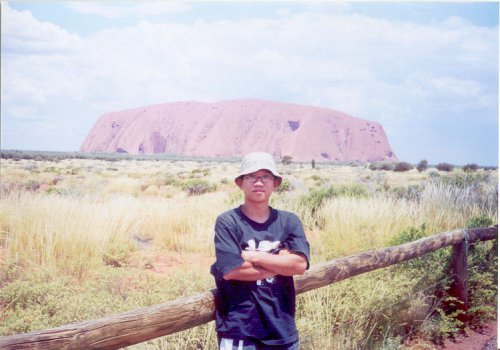
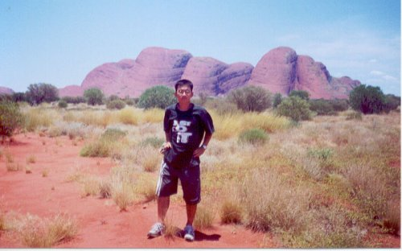
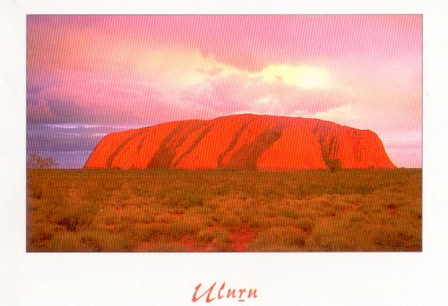
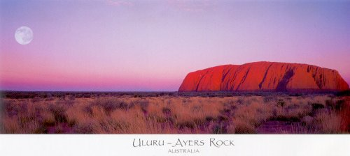
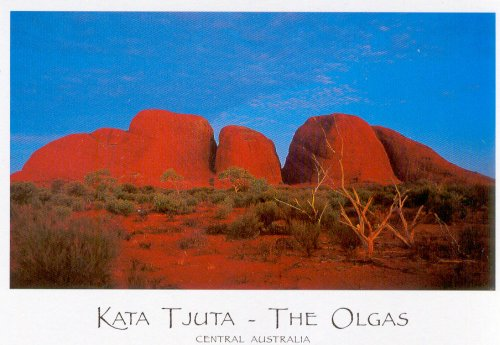
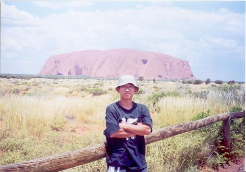
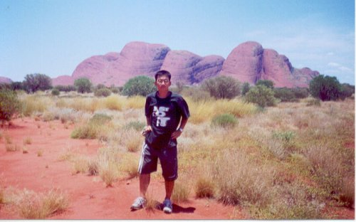
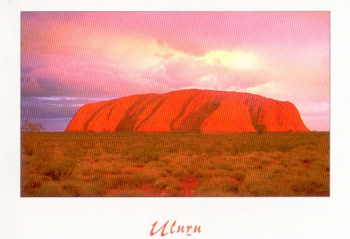
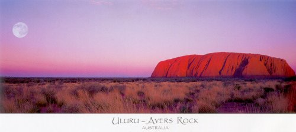
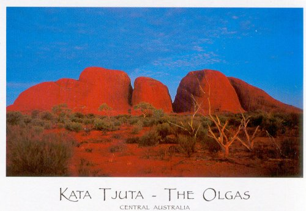

Centre 의 스펠링은 미국식이 아니라 영국식이다. 호주는 영국의 식민지였다.
레드 센터는 바로 호주 하면 가장 많이 떠오르는 두가지 이미지 - 시드니 오페라 하우스와 세계의 배꼽 울루루(영어로는 에어즈 락) - 중 하나인 울루루가 있는 곳이다.
울루루는 세계 최대의 바위이다. 울루루는 해질 무렵에는 발갛게, 비가오면 회색으로 변한다.





레드 센터는 바로 호주 하면 가장 많이 떠오르는 두가지 이미지 - 시드니 오페라 하우스와 세계의 배꼽 울루루(영어로는 에어즈 락) - 중 하나인 울루루가 있는 곳이다.
울루루는 세계 최대의 바위이다. 울루루는 해질 무렵에는 발갛게, 비가오면 회색으로 변한다.




